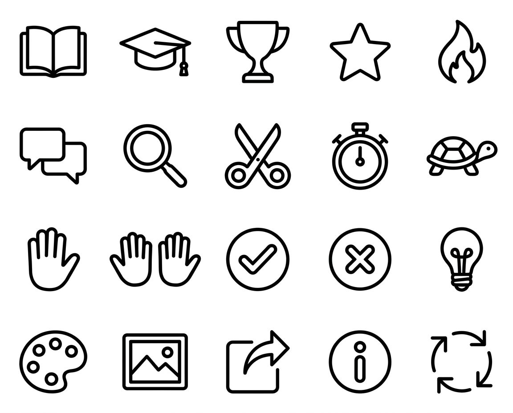
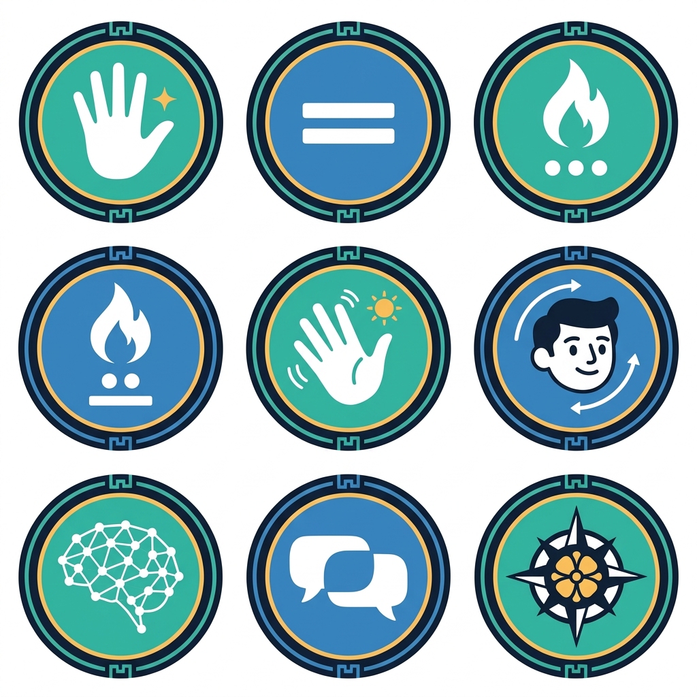
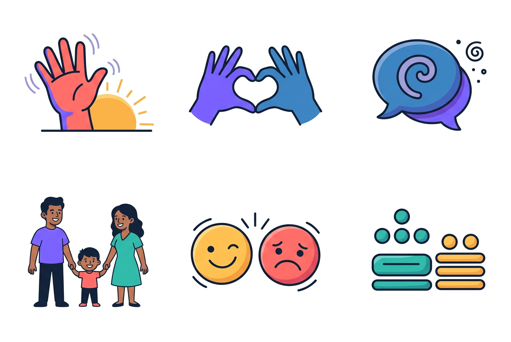
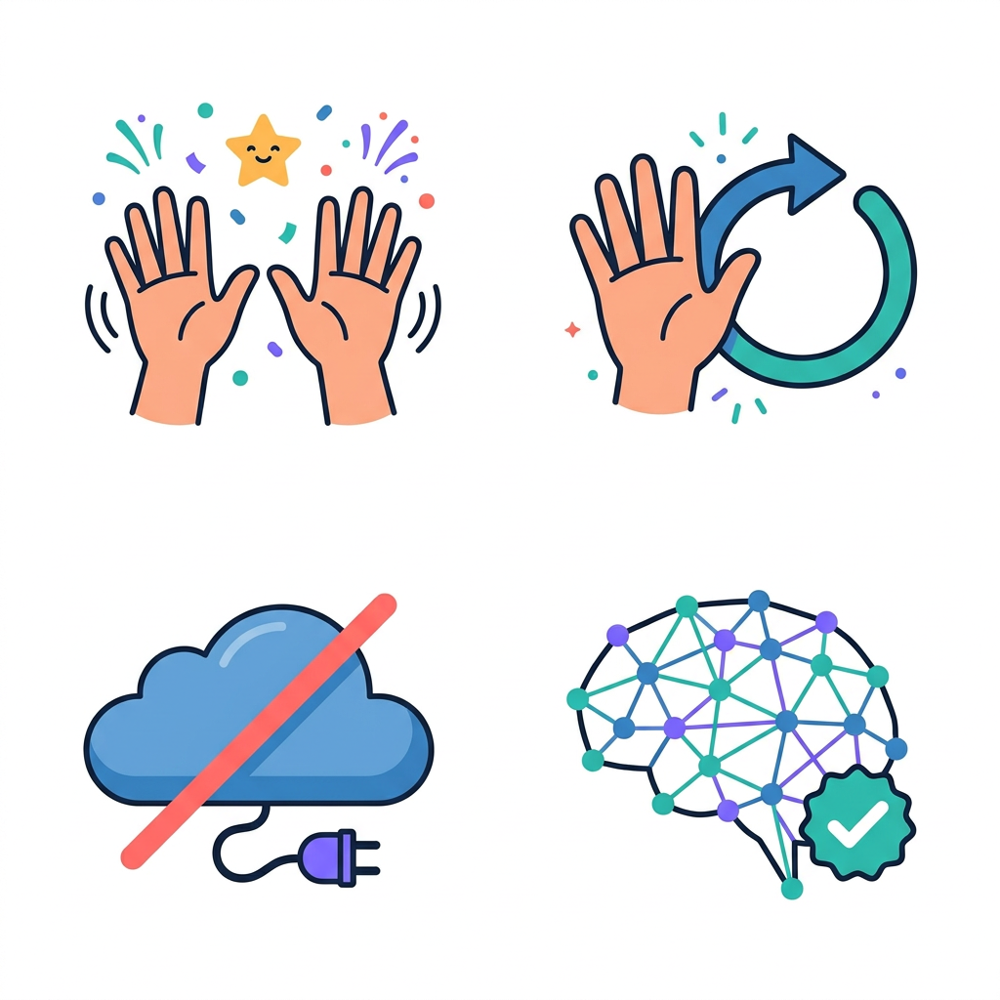
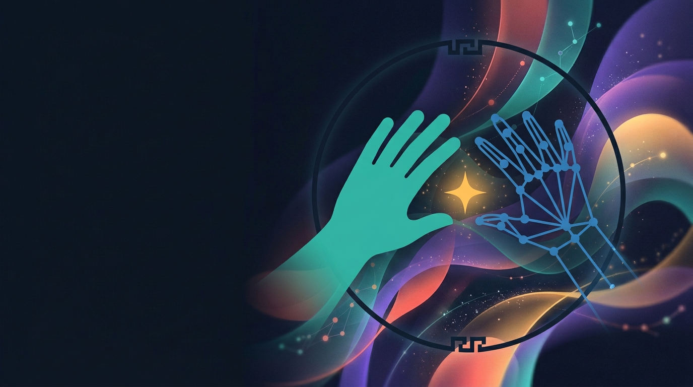
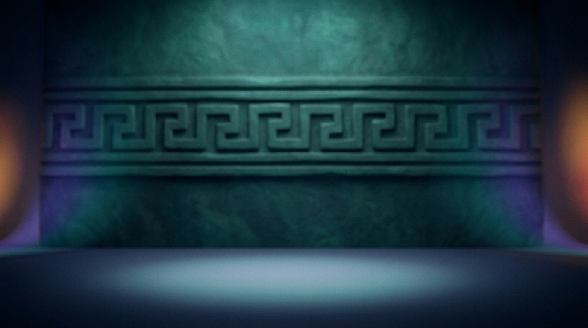

Modelo: google/nano-banana-2.1/text-to-image (edición con referencias) · resolución 1k · una sola generación por imagen · 9 imágenes.
iconos_2 cumple
20 íconos nuevos para las funciones nuevas (aprender, diccionario, logros, escenarios, una/dos manos, recortar…). Misma hoja 5 × 4 que la primera, para cortarlos igual.

1152x928 · 5:4
Con líneas guía 5 × 4
Referencia(s)
iconos.png
20 íconos en 5 × 4 y en el orden pedido: libro, birrete, trofeo, estrella, flama / diálogo, lupa, tijeras, cronómetro, tortuga / una mano, dos manos, palomita, tache, foco / paleta, cuadro con paisaje, exportar, información, repetir. Mismo trazo negro redondeado que iconos.png, sobre blanco, sin texto. Las manos tienen 5 dedos. Comprobado con la cuadrícula regular: ningún elemento cruza las líneas guía ni toca el borde. Detalle menor: el ícono de información es la forma de una «i» (punto sobre una barra), que es lo que se pidió.
insignias cumple, con detalles
9 insignias de logros del modo Aprender (3 × 3). Medallones mayas; los conteos van con numerales mayas de puntos y barras.

1024x1024 · 1:1
Con líneas guía 3 × 3
Referencia(s)
concepto_dialogo.png
9 medallones iguales en 3 × 3 y en el orden pedido. Conteos correctos con puntos y barras mayas: dos barras = 10, tres puntos = 3, una barra y dos puntos = 7. Centros jade y azul con aro ámbar, sin texto; las manos tienen 5 dedos. Comprobado con la cuadrícula regular: ningún elemento cruza las líneas guía ni toca el borde. Detalles: el borde no lleva una greca escalonada alrededor, solo unas muescas pequeñas arriba y abajo; la cabeza del avatar es una cara de caricatura plana, no «estilo 3D».
bienvenida cumple a medias
Tutorial de bienvenida de 4 pasos (2 × 2) que se muestra la primera vez que se abre la app.
1024x1024 · 1:1
Con líneas guía 2 × 2
Referencia(s)
ilustraciones.png
4 escenas en 2 × 2, mismo estilo que ilustraciones.png y el mismo personaje, sin texto. Comprobado con la cuadrícula regular: ningún elemento cruza las líneas guía ni toca el borde. Problemas: (paso 1) la persona escribe en la laptop, de lado y pegada a ella, en vez de estar a un metro, y el marco punteado solo rodea la cabeza, no hombros ni codos; (paso 2) solo una mano está levantada (la otra en el pecho) y hay un recuadro punteado suelto en el codo; (paso 3) aparecen manos tecleando, que sugieren escribir en lugar de signar; (paso 4) el avatar es una carita morada tipo emoji con las manos en las mejillas, no un humanoide 3D que signa. Las manos visibles tienen 5 dedos.
categorias cumple, con detalles
6 ilustraciones de categorías para el Diccionario de señas (3 × 2).

1264x848 · 3:2
Con líneas guía 3 × 2
Referencia(s)
ilustraciones.png
6 ilustraciones en 3 × 2 y en el orden pedido: saludos (mano y sol), cortesía (manos en corazón), preguntas (burbuja con espiral), familia, emociones (una cara feliz y una triste) y números (piedras de puntos y barras). Mismo estilo que ilustraciones.png, sin texto ni números latinos. Comprobado con la cuadrícula regular: ningún elemento cruza las líneas guía ni toca el borde. Detalles: en «números», el grupo de la izquierda (1 punto sobre 3 puntos y 2 barras) no es un numeral maya bien formado; el de la derecha (2 puntos y 3 barras = 17) sí. La familia ocupa más alto que las demás celdas. En el corazón, los dedos quedan parcialmente ocultos por el gesto.
estados cumple
4 ilustraciones de estado (2 × 2): ¡bien hecho!, inténtalo otra vez, sin internet y traductor entrenado.

1024x1024 · 1:1
Con líneas guía 2 × 2
Referencia(s)
ilustraciones.png
4 escenas en 2 × 2 y en el orden pedido: aplauso sordo (dos manos arriba con líneas de giro, confeti y estrella ámbar), inténtalo otra vez (mano con flecha circular), sin internet (nube tachada y clavija suelta) y traductor entrenado (cerebro de puntos con insignia de palomita). Manos de 5 dedos, sin texto. Comprobado con la cuadrícula regular: ningún elemento cruza las líneas guía ni toca el borde. Detalle menor: la estrella tiene carita.
portada cumple
Pantalla de carga de la app y portada (documentación, póster de Infomatrix). El tercio izquierdo queda oscuro para el nombre.

1376x768 · 16:9
Referencia(s)
concepto_dialogo.pngfondo_inicio.png
Mano sólida jade y mano de puntos azul a la derecha, con la estrella ámbar entre ellas, dentro de un aro con greca arriba y abajo. Cintas de luz turquesa, violeta, coral y ámbar con puntos de seguimiento, en el estilo de fondo_inicio.png. El tercio izquierdo queda oscuro y limpio para el nombre. Sin texto ni personas; la mano sólida tiene 5 dedos.
escenario_maya cumple, con detalles
Escenario del avatar «Jade»: estudio con muro de piedra con grecas mayas. El avatar se dibuja encima, al centro.

1376x768 · 16:9
Referencia(s)
fondo_avatar.png
Escenario vacío, piso con mancha de luz al centro, muro de piedra jade con banda de relieve, resplandor ámbar a los lados y bordes en sombra azul marino. Sin personas ni texto. Detalles: la greca es un meandro tipo «griego» en espiral, no la greca escalonada maya; el muro casi no está desenfocado (la banda se ve nítida).
escenario_aula cumple
Escenario del avatar «Aula»: salón de clases luminoso y desenfocado, para el modo Aprender.
1376x768 · 16:9
Referencia(s)
fondo_avatar.png
Aula muy desenfocada con ventanales a la izquierda, madera, libros, plantas y acentos turquesa y ámbar. El centro está despejado, con una mancha de luz en el piso. Sin personas ni texto legible. Detalle: la pared del fondo es azul marino oscuro, así que el conjunto es menos «luminoso» de lo pedido.
escenario_plaza cumple, con detalles
Escenario del avatar «Plaza»: calle colonial de Yucatán al atardecer, desenfocada.
1376x768 · 16:9
Referencia(s)
fondo_avatar.png
Calle colonial con fachadas coral, ámbar y turquesa, puertas en arco, balcones de hierro, macetas y series de luces. Centro despejado, sin personas, autos ni letreros. Detalles: es de noche o en la hora azul (cielo azul marino), no al atardecer dorado; el desenfoque es moderado (las fachadas del frente se ven bastante nítidas); la mancha de luz del piso es turquesa fría en vez de cálida.